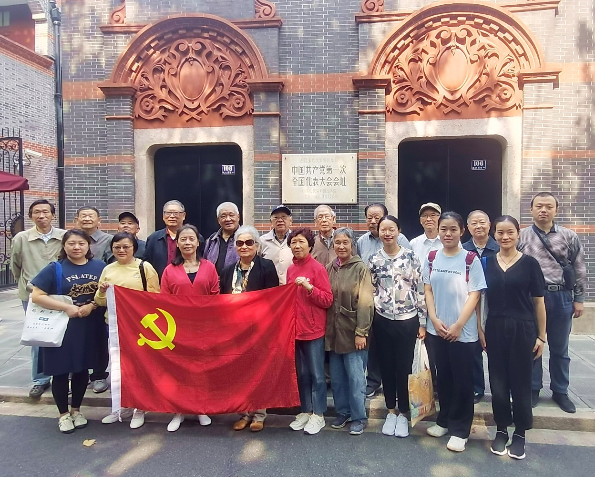
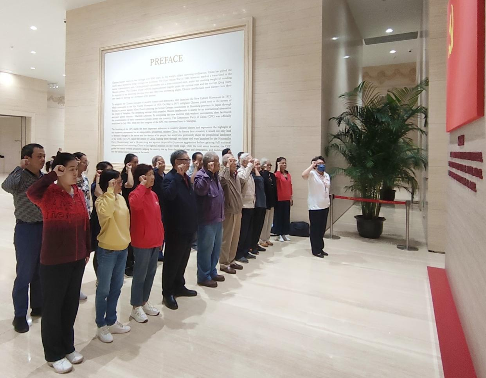
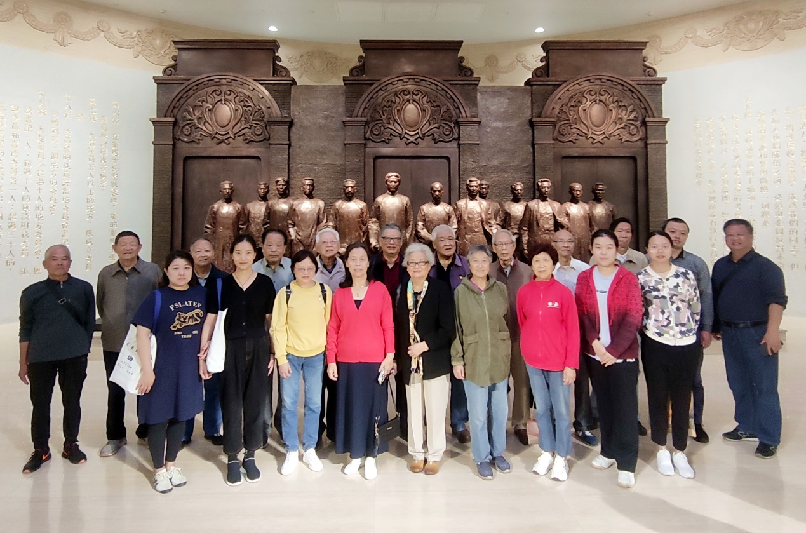
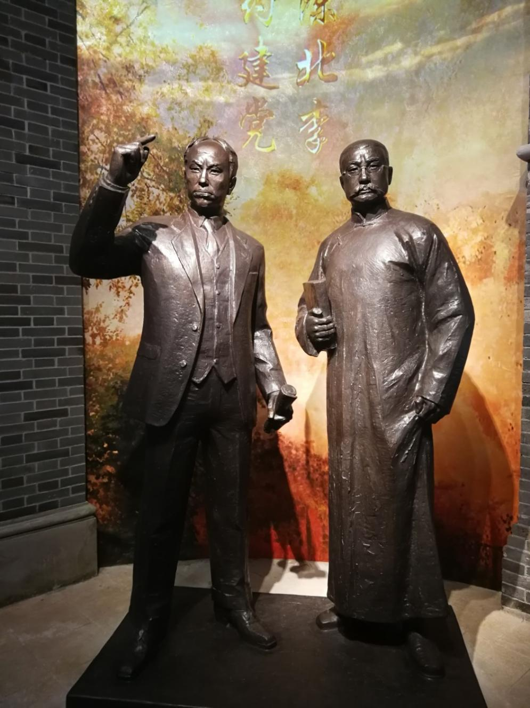
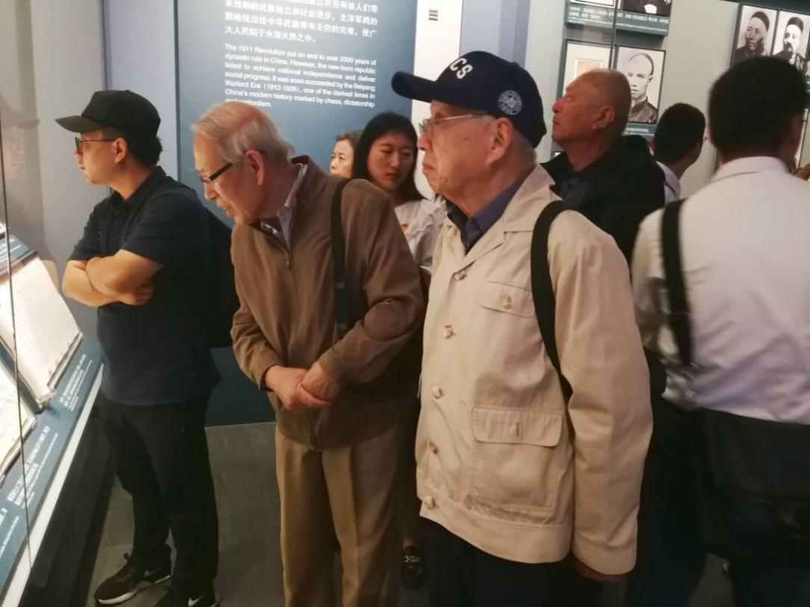
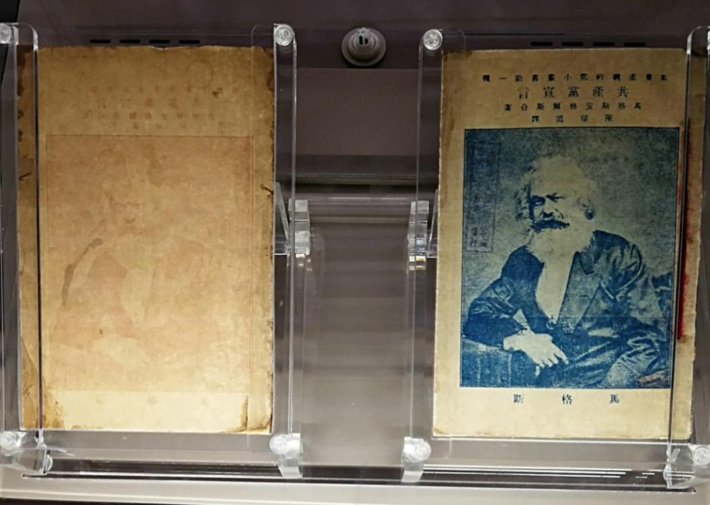
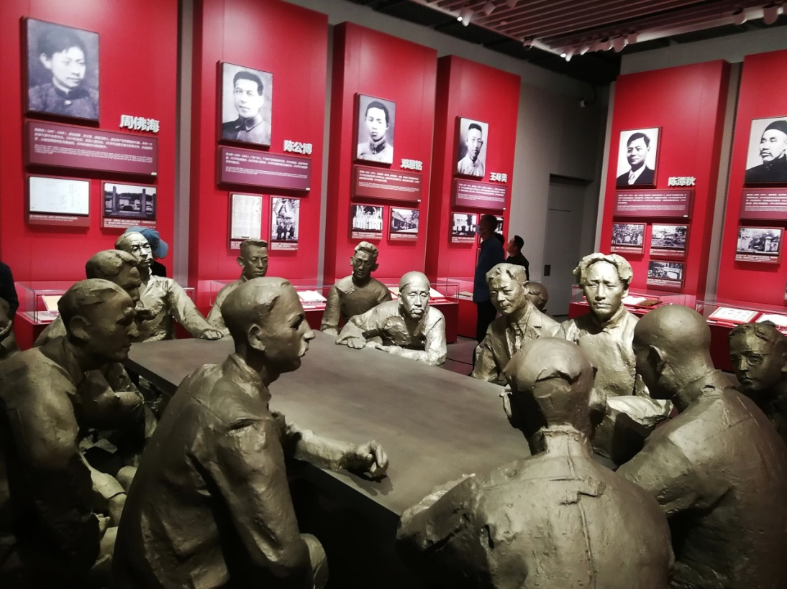
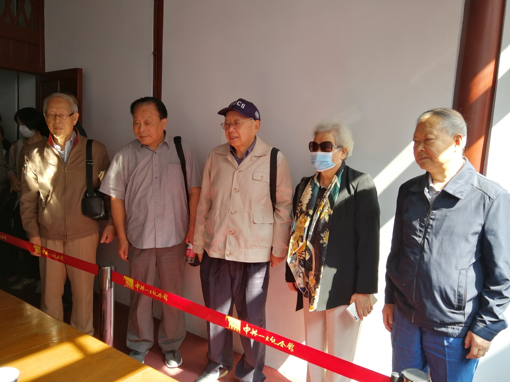
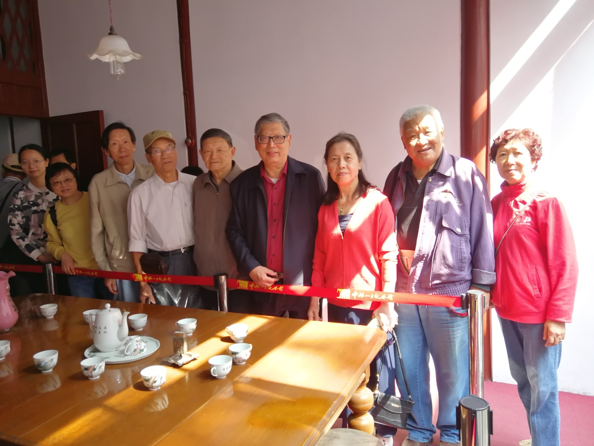

秋高气爽，丹桂飘香。2023年10月17日上午9:00，计算机学院退休党支部和计算机学院机关第一党支部一行21人，在邯郸路校门口乘车前往中共《一大会址》和《一大纪念馆》参观。
上午十时许，大家来到兴业路76号《一大会址》，同志们怀着激动的心情在《一大会址》门前合影留念。许多老师感慨地说，上次参观一大会址，那还是几十年以前的事了，这几十年，我们的国家在党的领导下，变得更加繁荣富强，令人振奋。

（前排左起：王莉莉、徐飞虹、王小芳、沈瑶英、单根妹、倪惠馨、冯颖欣、王静然、张莉；
后排左起：孙慰迟、于建华、王德新、刘其真、高海锋、曹邦伟、黄德利、李大学、彭德胜、李应华、顾鑫）
然后，同志们进入黄陂南路374号的中国共产党第一次全国代表大会纪念馆（简称《一大纪念馆》）的前厅，立即被《日出东方》、《民族脊梁》和《中流砥柱》三幅气势磅礴的大型壁画所吸引，三幅壁画相互呼应，形成历史和空间的融合，让我们浮想联翩，它体现了我们中国共产党的百年征程，是我们党精神和力量的凝聚与象征。
中共一大纪念馆前厅壁画《日出东方》
此次我们一行党员的首要心愿就是在《一大纪念馆》重温入党誓词，在纪念馆前厅的大幅党旗下，21位党员同志在退休党支部书记高海锋同志的带领下，庄严向党宣誓。我们一行党员中有在党五十多年的老同志，也有入党不久的年青同志，现在重温入党誓词，这是我们对党的又一次庄严承诺，也进一步焕发出我们理想的风帆和革命的青春！

党员们在党旗下庄严地向党宣誓
然后，大家走进纪念馆序厅，映入同志们眼帘的是13位中共一大代表神采奕奕的全身铜像雕塑。大家被这组主题雕塑深深吸引，并在这组雕塑前合影留念。

同志们在参加一大会议的13 位中国共产党党员代表群雕像前合影留念
紧接着，大家随同解说员进入展示厅。展览以“初心使命”贯穿全篇，共分为序厅、“前仆后继、救亡图存”、“民众觉醒、主义抉择”、“早期组织、星火初燃”、“开天辟地、日出东方”、 “砥砺前行、光辉历程”和尾厅共7个板块，综合采用多种展示手段，全面系统地展示了中国共产党的诞生历程。
中国共产党的建立，与陈独秀和李大钊两位革命先驱的开创性努力是分不开的。人们不会忘记他们的历史贡献，“南陈北李，相约建党”的雕像屹立在展厅最醒目的地方。

“南陈北李，相约建党”雕像
《一大纪念馆》的藏品主要是鸦片战争以来至社会主义革命和建设各个历史时期的文献、实物、报刊、书籍和照片。 藏品有近6万余件/套，其中珍贵文物8千余件/套。内容丰富，展品琳琅满目。
同志们一边认真地听讲解员的讲解，一边仔细地观看图片资料和展品，大家深受教育，心灵得到洗涤，思想得到进一步升华。

曹邦伟（右）、黄德利等同志在认真地观看展品
在参观过程中，刘其真、李应华、李大学等几位同志驻足在珍贵文物《共产党宣言》中文全译本展柜前，大家仔细端详着陈望道先生首译的《共产党宣言》第一版和第二版两本珍贵文物，心中对老校长充满敬仰之情。

1920年8月出版的中文全译本共产党宣言第一版（左）和9月出版的第二版
展示厅内还有一组中共一大会议代表们围桌而坐、热烈讨论的场景群雕，参加会议的除了13位中国代表之外，还有共产国际派来的两位代表，一个个雕像栩栩如生，增强了陈列的直观性和历史感染力。四周的墙上，还分别张贴着这15个人的照片和生平简介。

中共一大会议开会讨论场景的群雕像
党的历史告诉我们，参加中共“一大”的13位代表，在后来残酷的革命斗争中，有3人壮烈牺牲，有1人为党的事业积劳成疾而去世，另有7人叛党，开小差，脱党，而坚持到革命胜利的只有毛泽东和董必武。“为有牺牲多壮志，敢教日月换新天”，中国共产党人一路走来，确实不易。
参观完《一大纪念馆》后，大家怀着崇敬的心情走进兴业路76号底楼客厅，这里就是《一大会址》。客厅正中是一张长方形的西式大餐桌，桌上摆放着茶具、花瓶和紫铜烟缸。餐桌四周围着12只圆凳，东、西两壁各有茶几1只，椅子2把，靠北墙板壁处还有两斗桌1只。上午11时30分，同志们随着人流依次进入《一大会址》客厅，此时正好一缕灿烂的阳光照进厅堂，使整个厅堂更加明亮和温馨，同志们纷纷拍照留影纪念。

党员同志们在《一大会址》留影 （之一）
（左起：黄德利、李大学、曹邦伟、沈瑶英、李应华）

党员同志们在《一大会址》留影 （之二）
（右起：单根妹、高海锋、王小芳、刘其真、于建华、彭德胜、孙慰迟、徐飞虹、冯颖欣）
中午11时35分左右，参观结束，同志们恋恋不舍地离开了《一大会址》和《一大纪念馆》。
这次参观，党员同志们收获满满，大家深刻地认识到：中国共产党的诞生是历史的选择。不忘初心，方得始终。从星星之火到建国大业，从石库门到天安门，从兴业路到复兴路，实现中华民族伟大复兴，是我们中国共产党人团结带领中国人民不怕牺牲、艰苦奋斗，坚定不移的使命。
此次参观，也使我们更进一步领会了习近平总书记在庆祝中国共产党成立100周年大会上讲话对全党的的号召：牢记初心使命，坚定理想信念，践行党的宗旨，永远保持同人民群众的血肉联系，始终同人民想在一起、干在一起，风雨同舟、同甘共苦，继续为实现人民对美好生活的向往不懈努力，努力为党和人民争取更大光荣！
这里，还要向徐飞虹、姚文遐老师以及计算机学院机关第一支部的党员同志们为组织这次党员参观活动所进行的辛勤准备工作表示感谢！
撰稿人：高海锋、刘其真
照片提供人：刘其真、王静然
2023年10月24日